In conjunction with the ggplot2::theme system, the function element_path()
enables images in non-data components of the plot, e.g. axis text. It draws
images from valid image URLs, raster objects, or bitmap arrays.
Usage
element_path(
alpha = NULL,
colour = NA,
hjust = NULL,
vjust = NULL,
color = NULL,
angle = NULL,
size = 0.5
)Arguments
- alpha
The alpha channel, i.e. transparency level, as a numerical value between 0 and 1.
- colour, color
The image will be colorized with this color. Use the special character
"b/w"to set it to black and white. For more information on valid color names in ggplot2 see https://ggplot2.tidyverse.org/articles/ggplot2-specs.html?q=colour#colour-and-fill.- hjust, vjust
The horizontal and vertical adjustment respectively. Must be a numerical value between 0 and 1.
- angle
The angle of the element as a numerical value between 0° and 360°.
- size
The output grob size in
cm(!).
See also
geom_from_path() for more information.
Examples
library(ggplot2)
library(ggpath)
# compute path of an R logo file shipped with ggpath
local_image_path <- system.file("r_logo.svg", package = "ggpath")
# create dataframe with x-y-coordinates and the above local path
plot_data <- data.frame(x = c(-1, 1), y = 1, path = local_image_path)
# Replace title, subtitle, the caption, axis labels as well as y-axis text
# the the local image
ggplot(plot_data, aes(x = x, y = local_image_path)) +
theme_minimal() +
labs(
title = local_image_path,
subtitle = local_image_path,
x = local_image_path,
y = local_image_path,
caption = local_image_path
) +
theme(
plot.caption = element_path(hjust = 1, size = 0.6),
axis.text.y = element_path(size = 1),
axis.title.x = element_path(),
axis.title.y = element_path(vjust = 0.9),
plot.title = element_path(hjust = 0, size = 2, alpha = 0.5),
plot.subtitle = element_path(hjust = 0.9, angle = 45),
)
